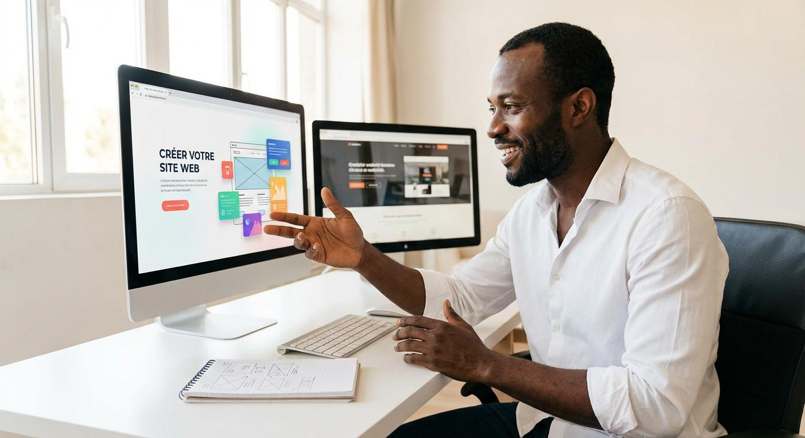
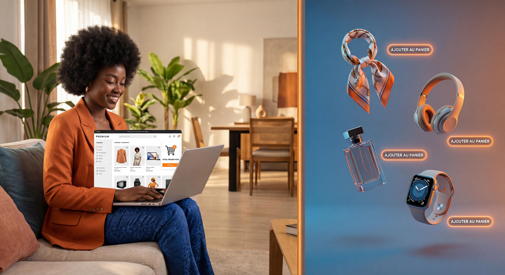

Le marketing digital est au cœur de la stratégie de développement de toute entreprise en Afrique francophone. Sites professionnels, applications métiers, stratégie digitale complète.
Le marketing digital est un ensemble de techniques et d'outils permettant de générer visibilité, leads et ventes via le web et les canaux numériques.
Dans le contexte de la Côte d'Ivoire et de l'Afrique de l'Ouest, le marketing digital permet aux entreprises locales de concurrencer efficacement sur les marchés nationaux et internationaux, en misant sur une visibilité ciblée, un contenu pertinent et une expérience utilisateur fluide.
La conception de sites web et d'applications doit s'inscrire dans une logique globale de communication digitale, avec une attention particulière au SEO, au mobile et à la sécurité des données.
La conception d'un site web professionnel commence par une analyse claire de vos objectifs : voulez-vous présenter votre activité, générer des contacts, vendre en ligne ou gérer des formulaires de demande ? Une fois les besoins identifiés, nous définissons une architecture de site, une charte graphique cohérente et une expérience utilisateur fluide.
Un bon site web intègre des fonctionnalités adaptées au métier : formulaires de contact, devis en ligne, espace client, intégration WhatsApp, géolocalisation. Le site est conçu pour être rapide, sécurisé (HTTPS), optimisé pour le SEO et maintenable dans le temps.

Au-delà du site vitrine ou e-commerce, de nombreuses entreprises ont besoin d'applications digitales spécifiques à leur métier : gestion clients, suivi de projets, logistique, dédouanement, expédition, réservation de voyages, facturation, gestion d'inventaire ou de personnel.
Le développement d'une application de métier repose sur une analyse de process, puis sur la modélisation des flux, des formulaires, des droits d'accès et des rapports automatiques. L'objectif est de gagner du temps, réduire les erreurs, sécuriser les données et simplifier la collaboration entre équipes.
Le marketing digital ne se limite pas à la création d'un site ou d'une application : il s'inscrit dans une stratégie globale comprenant le SEO, les campagnes publicitaires en ligne (SEA, réseaux sociaux, Google Ads), la gestion de la réputation et du contenu éditorial, ainsi que l'analyse de la performance.
L'accompagnement inclut la définition de persona cibles, la recherche de mots-clés, la rédaction de contenus SEO, la configuration de formulaires de collecte, la mise en place de retargeting, et le suivi régulier des résultats.
Sites vitrines, sites institutionnels, portfolios. Responsive, rapide, optimisé SEO dès le lancement.

Boutiques en ligne, catalogues produits, paiement mobile money et carte, gestion des commandes.
Gestion clients, facturation, logistique, RH : des outils sur mesure pour digitaliser vos processus.
Stratégie de contenu, optimisation technique, backlinks et suivi de positionnement pour votre visibilité.
Sites web professionnels, applications métiers et stratégie digitale pour les entreprises d'Afrique de l'Ouest.